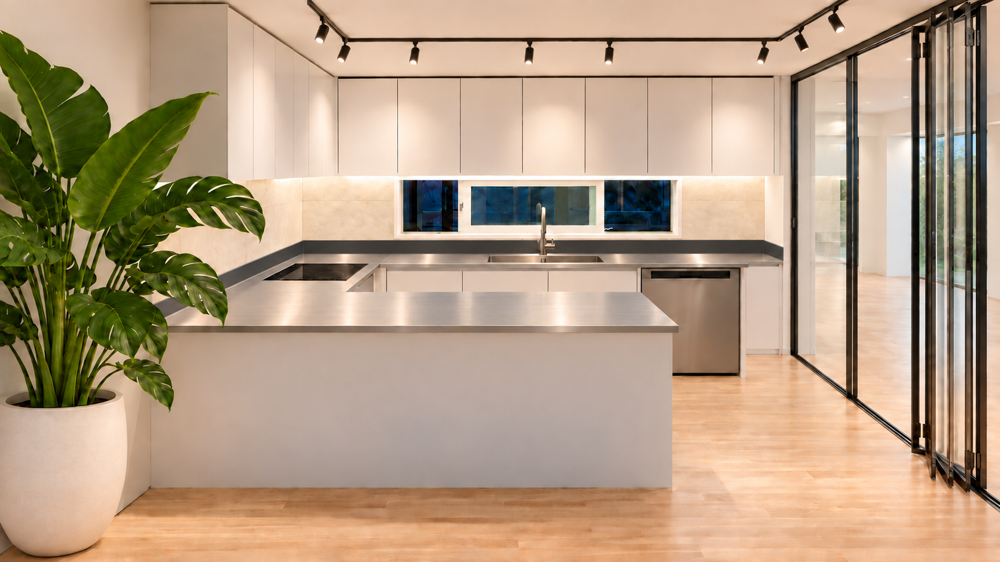
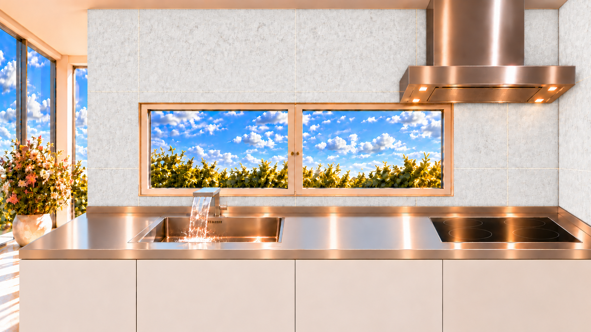

직접 설치하는 고객
필요한 상판과 제품을 선택하고 치수·수량을 알려주세요. 직접 설치할 공간에 맞는 제품 사양을 상담합니다.
직접시공 제품 문의EUNBIT KITCHEN
스테인레스 상판과 주방 제품,
필요한 방식에 맞춰 상담하세요.

고객별 안내
필요한 상판과 제품을 선택하고 치수·수량을 알려주세요. 직접 설치할 공간에 맞는 제품 사양을 상담합니다.
직접시공 제품 문의시공할 지역과 필요한 작업을 알려주세요. 해당 지역의 시공업자 연결 가능 여부와 시공 범위를 상담합니다.
지역별 매칭 상담제작 도면과 제품 사양을 바탕으로 상판·씽크볼·부속품의 공급을 상담합니다. 수량과 납품 일정도 함께 알려주세요.
업체 공급 문의제품 안내
제품 분류를 선택하고 규격·수량을 알려주세요.
가격과 공급 가능 여부는 사양 확인 후 상담합니다.
일자형 · 디귿자형 · 기역자형
주방 배치에 맞는 형태와 치수로 상판 제작을 상담합니다. 씽크볼·수전 타공 위치와 마감 사양을 함께 확인합니다.
제품 문의크기 · 상판 사양
공간과 용도에 맞는 크기와 상판 사양을 상담합니다. 설치 공간의 치수나 참고 도면을 준비해 주세요.
제품 문의모델 · 규격
기성 씽크볼의 모델과 규격을 기준으로 상담합니다. 설치할 상판과 타공 치수의 적합 여부를 함께 확인합니다.
제품 문의연결 · 배수 · 설치 부품
씽크볼 관련 부품과 필요한 부속품을 상담합니다. 사용 중인 제품의 모델명이나 부품 사진을 알려주세요.
제품 문의수전 · 연결 사양
필요한 수전의 종류와 설치 조건을 상담합니다. 타공 규격과 급수 연결 조건을 함께 확인합니다.
제품 문의그 외 제품 문의
위 분류에 해당하지 않는 제품은 기타로 문의해 주세요. 필요한 제품과 용도, 규격을 알려주시면 상담합니다.
제품 문의
스테인레스 상판
설치 공간의 형태와 치수를 기준으로 상담합니다. 씽크볼과 수전 위치, 표면 마감, 물받이 턱 등 필요한 사양을 알려주세요.
상판 제작 문의주방과 상판 사진은 구성 참고 이미지입니다.
지역별 시공업자 매칭
지역과 필요한 작업 범위를 바탕으로 시공업자 연결 가능 여부를 상담합니다. 제품 구매와 함께 시공이 필요한지, 기존 제품 교체만 필요한지도 알려주세요.
지역별 매칭 상담하기시·도, 시·군·구와 시공할 제품·작업 범위를 작성합니다.
해당 지역의 시공 가능 여부와 작업 조건을 확인합니다.
제품 비용과 시공 범위, 일정을 확인한 뒤 진행 여부를 결정합니다.